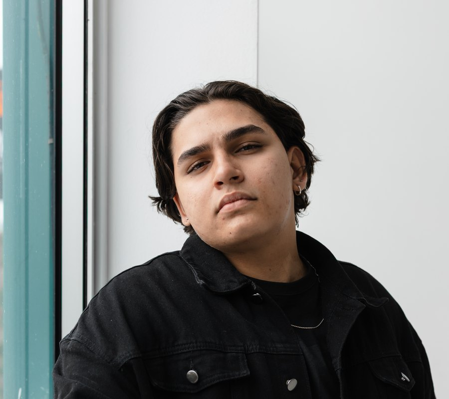

Daniel
Direção estratégica e tecnologia
Responsável por entender o momento de cada empresa, organizar a direção dos projetos e transformar necessidades em soluções práticas. Atua no planejamento, na estruturação dos sites e na integração entre estratégia, comunicação e tecnologia.